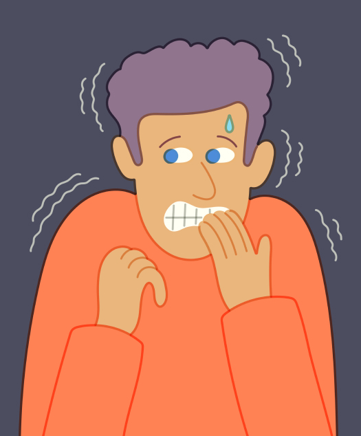
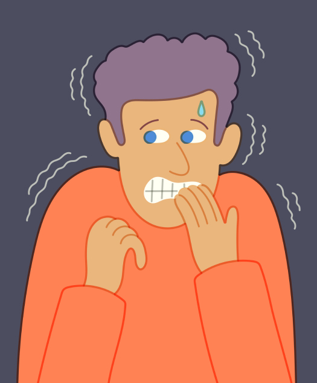

San Francisco-based artist Tim Lahan’s naughty, witty artwork is the product of his ability to digest and illustrate clever glitches, concepts and interesting visual cues from the world around him. “I generally aim to make things as simple as possible,” says Tim. “Sometimes they come out funny.” the ADC Young Gun award winner’s instantly recognisable style is enviably simple and genuinely funny: something very few illustrators can boast.